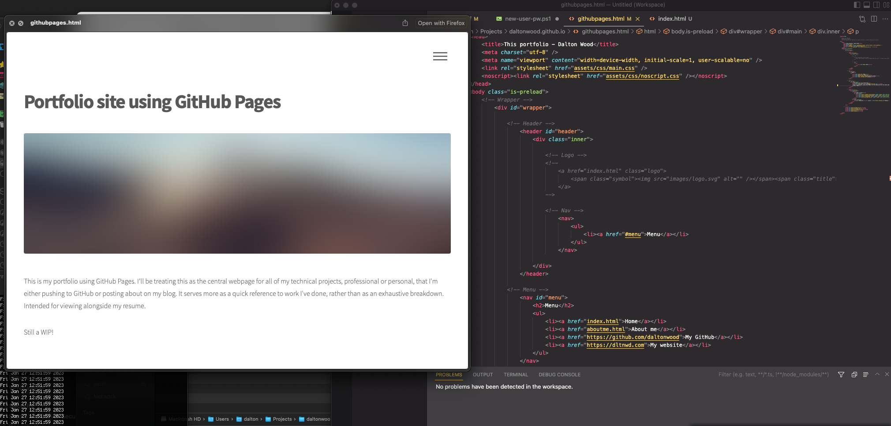

Portfolio site using GitHub Pages
This is my portfolio site using GitHub Pages. I'll be treating this as the central webpage for all of my technical projects, professional or personal, that I'm pushing to GitHub or posting about on my blog. It serves more as a quick reference to work I've done with minimal info, rather than as an exhaustive breakdown. Mostly intended for viewing alongside my resume.
I grabbed a nice looking template from HTML5UP.net and tweaked it to my liking, then deployed it using GitHub Pages. GitHub Pages makes this incredibly easy by doing everything automatically for you. All I'm doing is pushing my changes to the repository, and the deployment is done automatically using the GitHub Pages environment.